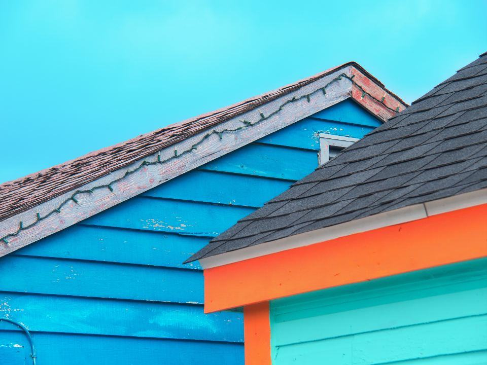

Hur långt har ni kommit med färgvalet?

En färgkarta i en pärm ljuger alltid lite. En kvadratmeter på rätt vägg, i rätt ljus, ljuger aldrig.

Färgsatta och målade
- Utfört

Berga kulörprogram
Färgskala i sju toner för ett bostadsområde från 1970-talet.
- Utfört

Stortorget 7
Tre provytor, stadsantikvariens val och kalkfärg i fyra skikt.
- Utfört

Sommarhus i Borgholm
Gråvit panel och mörkgröna fönster som passar kalkstensmurarna runt tomten.
- Utfört

Vårdcentralen Smedby
Färgkodade korridorer som gör det lättare att hitta för äldre patienter.
- Utfört

Kontorshuset Lindö
Fyra våningar, en accentkulör per plan och kontrastmarkerade trappor.
- Pågående

Nybro radhusområde
Provytor i maj och målning i två etapper.
Från skiss till sista strykning
- 1

Samtal och platsbesök
Färgsättaren går runt huset eller området, fotograferar och mäter befintliga kulörer.
- 2

Skiss och kulörlista
Ni får två eller tre förslag i bild med NCS-koder för varje byggnadsdel.
- 3

Provytor
Vi målar prover i fullskala och låter dem sitta i minst en vecka i olika väder.
- 4

Målning och kontroll
Våra målare utför färgsättningen, och färgsättaren kontrollerar resultatet på plats.

Färgsättare och målare under ett tak
 01 / 042färgsättareMed NCS-utbildning
01 / 042färgsättareMed NCS-utbildning 02 / 041 m²Minsta provyta på fasad
02 / 041 m²Minsta provyta på fasad 03 / 0426områdenMed kulörprogram från oss
03 / 0426områdenMed kulörprogram från oss 04 / 0412anställdaAteljé och målare
04 / 0412anställdaAteljé och målareKulörverket startades 2014 av Sofia Bergkvist, utbildad färgsättare och tidigare inredningsarkitekt, och målarmästaren Anders Wiklund. De hade samarbetat i flera år och sett hur färgsättningar som såg bra ut i ritningarna blev fel på fasaden när ingen följde dem hela vägen.
Alla nyckeltal